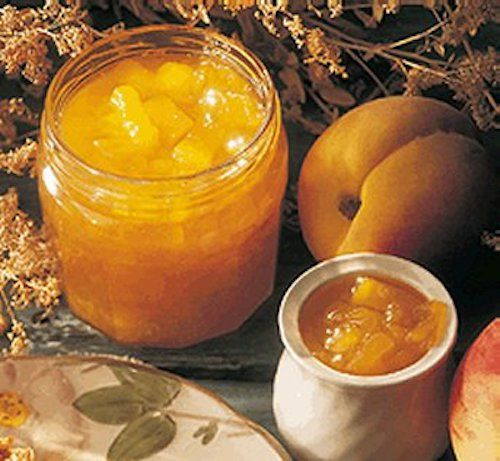
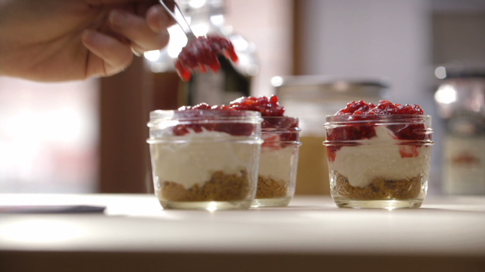

Recettes foie gras par L'atelier des Chefs
2021.03.27 00:16
Menu L'atelier des Chefs L'atelier des Chefs Menu L'atelier des Chefs Fermer L'atelier des Chefs Cours en atelier Thématiques de cours Formules de cours Nos 9 ateliers en France EVJF Cours en ligne Prochains directs Replays Thématiques S'abonner Activer un code abonnement Cadeau Utiliser sa carte cadeau Formules à offrir Recettes Techniques de cuisine Evenements Formations Fermer Cours en atelier Cours en ligne Cadeau Recettes Evenements Formations Nouvelle recherche Affiner la recherche Accueil > Recettes de Chefs > Recettes foie gras
recettes foie gras
Découvrez toutes les recettes foie gras de nos Chefs : en terrine, en verrine, au torchon, poêlé, sur des toasts... Vous pouvez réaliser de nombreuses recettes avec le foie gras . Apprenez à le cuisiner grâce aux nombreux conseils de nos Chefs. Une fois la technique acquise, variez les plaisirs et réaliser des recettes foie gras originales !Recettes foie gras, les dossiers recettes associés
Recettes foie gras torchon
Recettes toast au foie gras
Recettes verrine foie gras
Recettes foie gras poêlé
Recettes terrine foie gras
Recettes oeuf cocotte foie gras
Recettes raviole foie gras
Recettes de crumble foie gras
Recettes crème foie gras
Recettes de foie gras en vidéo
Recettes de foie gras maison
Nouvelle recherche Affiner la recherche Nouvelle recherche Rechercher Annuler Mots clés Ajouter Ingrédients Avec : Sans : Critères pratiques Recettes rapides recettes faciles Recettes avec vidéo Recettes avec photo Régimes alimentaires Recettes sans porc Recettes sans alcool Recettes végétariennes Recettes végétaliennes Rappel de vos critères Nouvelle recherche Affiner la recherche Annuler Nouvelle recherche Affiner la recherche Foie gras au torchon Lobe de foie gras de canard entier, déveiné puis enveloppé d'un torchon et poché dans l'eau. La cuisson du foie gras au torchon permet de maîtriser parfaitement la température ambiante, car nous sommes dans un liquide. Facile30mn
1h
12h Note des internautes : ( 5681 votes ) Foie gras poêlé, betterave au cassis et poivre blanc de Penja Des tranches de foie gras poêlées, des palets de betterave rouge colorés puis confits dans une sauce au sirop de cassis, à saupoudrer de poivre blanc de Penja Intermédiaire
10mn
10mn
0mn Note des internautes : ( 410 votes ) Foie gras poêlé, crumble de pommes au pain d'épice Des tranches de foie gras colorées accompagnées de pommes fondantes et d'une chapelure croustillante de pain d'épice. Facile
15mn
20mn
10mn Note des internautes : ( 397 votes ) Foie gras poché au vin Foie gras poché dans un vin chaud épicé et servi froid. Facile
20mn
10mn
1j Note des internautes : ( 321 votes ) Foie gras mariné, compote de fruits vieux garçon au porto Découvrez la recette de la première partie du cours live de Noël 2011 spécial foie gras ! Facile
30mn
30mn
12h Note des internautes : ( 267 votes ) Terrine de foie gras au micro-ondes au poivre long, chutney de cerises Une délicieuse terrine express de foie gras accompagnée d'une confiture acidulée. Facile
1h
2mn
1j Note des internautes : ( 176 votes ) Terrine de foie gras aux fines feuilles de chocolat Une terrine de foie gras au naturel, accompagnée de fines feuilles de chocolat noir très croquantes ! Facile
1h
20mn
13h Note des internautes : ( 97 votes ) Terrine de foie gras au naturel Apprenez à déveiner votre lobe de foie gras, à l'assaisonner et à le cuire dans une terrine, à filtrer sa graisse. A préparer au minimum 5 jours avant la dégustation. Facile
1h
30mn
12h Note des internautes : ( 7449 votes ) Ballottine de foie gras et coings pochés Un foie gras cuit au torchon accompagné de morceaux de coings cuits dans un sirop vanillé. Intermédiaire
30mn
1h
12h Note des internautes : ( 93 votes ) Ballotines de foie gras au chutney de poire Des ballottines individuelles de foies gras au cœur de chutney de poire. Intermédiaire
40mn
1h20mn
13h Note des internautes : ( 274 votes ) Cours de cuisine Cours de cuisine en atelier Cours de cuisine en ligne Stages de cuisine longs Cadeau cours de cuisine Nos ateliers Nos chefs Utiliser une carte cadeau ou un bon cadeau Pour aller plus loin Ateliers d'oenologie Evénements d'entreprise Formation cuisine & pâtisserie Reconversion professionnelle Formation au CAP Pâtissier Formation au CAP Cuisine Formation au CAP Boulanger L'atelier des Chefs Pro Offre spéciale Comité d'Entreprise Cadeaux d'entreprise Nos partenaires Conseil culinaire Evénementiel culinaire Formation professionnelle Pratique Recrutement Questions fréquentes Contactez-nous Newsletter Presse Mentions légales Politique de confidentialité Loading...
- confiture d'orange : Recette de confiture d'orange - Marmiton
- LES MEILLEURES RECETTES DE TARTE
- Les Recettes de Radio-Canada | Mordu
- Recettes de cuisine énergétique : des idées de recettes ...
- Pâtisseries et gourmandises - piroulie
- RMC Story : Tous les programmes et émissions en direct et ...
- 60278 Jeux gratuits pour mobiles - Jeuxclic.com
- Recettes pour Machine à pain
- Tous les jours de nouvelles recettes de cuisine
- LES MEILLEURES RECETTES DE GATEAU FACILE
- confiture d'orange : Recette de confiture d'orange - Marmiton
Résultat de la recherche. chaque article trouvé est affiché sous la forme d'un titre (en gras) suivi des numéro et date de l'édition ainsi que de la rubrique concernée, plus un résumé de quelques lignes. la totalité de l'article est visible en cliquant simplement sur >>suite>>. les mots-clés sont mis en évidence comme ceci.
- LES MEILLEURES RECETTES DE TARTE
RMC Story, une chaîne TNT gratuite et inédite pour toute la famille, avec des programmes en HD thématisés : série-docu, Fiction & Série, Mag & Info
- Les Recettes de Radio-Canada | Mordu
Peler les kiwis (c'est le plus long !). Les couper en petits dés, les mettre dans une bassine à confiture en y ajoutant le jus du citron, le jus de l'orange, 1 sachet de sucre vanillé, la moitié du poids des kiwis en sucre cristallisé et des zestes de l'orange et du ;citron.
- Recettes de cuisine énergétique : des idées de recettes ...
Avec Ptitchef retrouvez tous les jours de nouvelles recettes de cuisine. Plus de 90 000 recettes pour tous les goûts. En photo, en vidéos et pas à pas. Un...
- Pâtisseries et gourmandises - piroulie
Vous trouverez sur cette page toutes les recettes de tartes sucrées pour vos desserts mais aussi de nombreuses recettes de tartes salées. Tarte aux pommes Tarte au chocolat Tarte au citron Tarte tatin ... Tarte à la frangipane et confiture d'abricot. Par campanule. 172. Recette de cuisine 4.33/5; 4.3/5 (9 votes) Tarte crumble a la myrtille ...
- RMC Story : Tous les programmes et émissions en direct et ...
60278 Recherche de jeux. 60278 Jeux Gratuits pour Mobile, Tablette et Smart TV
- 60278 Jeux gratuits pour mobiles - Jeuxclic.com
Propose la livraison hebdomadaire de fruits et légumes frais issus de l’agriculture biologique dans la région de l'étang de Berre. Présentations des paniers, tarifs et idées recettes. Vitrolles.
- Recettes pour Machine à pain
Découvrez toutes les recettes foie gras de nos Chefs : en terrine, en verrine, au torchon, poêlé, sur des toasts... Vous pouvez réaliser de nombreuses recettes avec le foie gras.Apprenez à le cuisiner grâce aux nombreux conseils de nos Chefs.
- Tous les jours de nouvelles recettes de cuisine
Vous pouvez napper les abricots avec un peu de confiture d'abricots chauffée au micro-ondes ou de nappage pour donner à la tarte un effet plus brillant. Posté par Annaelle08 à 08:19 - Commentaires [6] - Permalien [ # ]
- LES MEILLEURES RECETTES DE GATEAU FACILE
Merci et a bientôt - gateau facile a la machine a pain - Bonjour je suis nounou et je recherche une recette de gâteau pour l anniversaire de 2 p'tits 3 et 6 ans je voudrais les faire participer donc quelque chose de facile surtout pas de chocolat car il y a 1 allergique merci beaucoup
Résultat de la recherche. chaque article trouvé est affiché sous la forme d'un titre (en gras) suivi des numéro et date de l'édition ainsi que de la rubrique concernée, plus un résumé de quelques lignes. la totalité de l'article est visible en cliquant simplement sur >>suite>>. les mots-clés sont mis en évidence comme ceci.
RMC Story, une chaîne TNT gratuite et inédite pour toute la famille, avec des programmes en HD thématisés : série-docu, Fiction & Série, Mag & Info
Peler les kiwis (c'est le plus long !). Les couper en petits dés, les mettre dans une bassine à confiture en y ajoutant le jus du citron, le jus de l'orange, 1 sachet de sucre vanillé, la moitié du poids des kiwis en sucre cristallisé et des zestes de l'orange et du ;citron.
Avec Ptitchef retrouvez tous les jours de nouvelles recettes de cuisine. Plus de 90 000 recettes pour tous les goûts. En photo, en vidéos et pas à pas. Un...
Vous trouverez sur cette page toutes les recettes de tartes sucrées pour vos desserts mais aussi de nombreuses recettes de tartes salées. Tarte aux pommes Tarte au chocolat Tarte au citron Tarte tatin ... Tarte à la frangipane et confiture d'abricot. Par campanule. 172. Recette de cuisine 4.33/5; 4.3/5 (9 votes) Tarte crumble a la myrtille ...
60278 Recherche de jeux. 60278 Jeux Gratuits pour Mobile, Tablette et Smart TV
Propose la livraison hebdomadaire de fruits et légumes frais issus de l’agriculture biologique dans la région de l'étang de Berre. Présentations des paniers, tarifs et idées recettes. Vitrolles.
Découvrez toutes les recettes foie gras de nos Chefs : en terrine, en verrine, au torchon, poêlé, sur des toasts... Vous pouvez réaliser de nombreuses recettes avec le foie gras.Apprenez à le cuisiner grâce aux nombreux conseils de nos Chefs.
Vous pouvez napper les abricots avec un peu de confiture d'abricots chauffée au micro-ondes ou de nappage pour donner à la tarte un effet plus brillant. Posté par Annaelle08 à 08:19 - Commentaires [6] - Permalien [ # ]
Merci et a bientôt - gateau facile a la machine a pain - Bonjour je suis nounou et je recherche une recette de gâteau pour l anniversaire de 2 p'tits 3 et 6 ans je voudrais les faire participer donc quelque chose de facile surtout pas de chocolat car il y a 1 allergique merci beaucoup
 